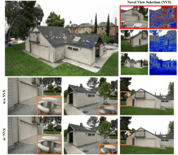
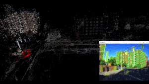
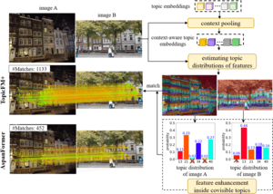
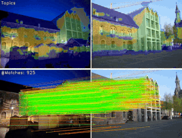
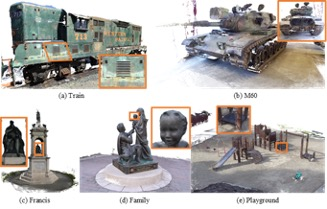
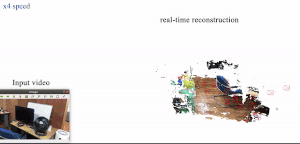
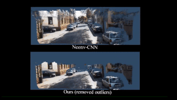

IJCAI · 2025
Online 3D Gaussian Splatting Modeling with Novel View Selection
Online 3D Gaussian splatting with novel view selection for building scene models as new observations arrive.

AI Researcher Ph.D., KAIST
I am an AI researcher focused on reconstructing and understanding the 3D world from images. My work spans 3D reconstruction, neural rendering, and autonomous driving.
I received my Ph.D. in Computer Science from KAIST in 2024, advised by Prof. Sungho Jo and Prof. Soohwan Song. My doctoral research explored multi-view stereo, feature matching, and visual localization. My publications include work at CVPR, ICLR, AAAI, and IJCAI, and in IEEE TIP.
Alongside my academic research, I bring experience in perception and planning for autonomous driving. Previously, I was a 3D Vision Engineer at 42dot, Hyundai Motor Group, where I worked on multi-camera perception. See an autonomous driving demo ↗
Selected papers, ordered by year.
* Equal contribution · † Corresponding author · Download all citations

Online 3D Gaussian splatting with novel view selection for building scene models as new observations arrive.

Semi-dense image correspondences for estimating camera pose and connecting images to a 3D scene.

Topic-assisted feature matching designed to improve both matching accuracy and efficiency.

Topic-assisted feature matching that connects local correspondences with interpretable scene context.

Prior depth information guides multi-view stereo for online 3D model reconstruction.

Curvature-guided dynamic scales for estimating depth from multiple views.

Sequential depth completion with confidence estimates for 3D model reconstruction.
Recognition for academic peer review at CVPR 2024.
June 2024
Top 9% in the Kaggle Image Matching Challenge.
June 2023
I’m currently on the job market and welcome conversations about opportunities in 3D vision, neural rendering, and autonomous driving. I’m also happy to discuss research collaborations. View my CV (PDF) and get in touch.
khangtg.hust.it@gmail.com ↗